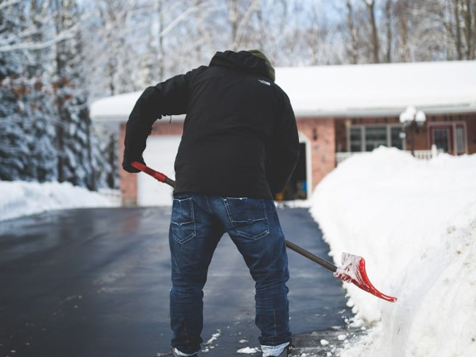

Need a hand?
Reliable Snow Removal in Sudbury, Ontario
Sudbury Workforce provides snow removal in Sudbury, Ontario for homes across Greater Sudbury — from Downtown, New Sudbury and Minnow Lake to Valley East, Chelmsford, Lively and Garson. Our residential snow removal covers snow plowing and driveway clearing, shovelled walkways and steps, and salt for icy spots. Choose a one-time clear-out, a visit after every snowfall or a whole-winter plan, and request your free quote today.
- Free estimates
- Same-day service
- Local & reliable

Professional Snow Removal Services in Sudbury
Plowing, shovelling and salting for Sudbury homes, all from one local crew.
Residential Snow Removal
Our residential snow removal in Sudbury keeps your home reachable all winter. We clear the driveway, the front walk and the steps, so you can get to work, school and appointments, and visitors and deliveries can get to your door. Seniors and busy families who'd rather not shovel can leave it to us.
Driveway Snow Clearing and Snow Plowing
For snow plowing in Sudbury, we plow your driveway to move the bulk of the snow quickly, then shovel the edges and the tight spots a plow can't reach, like around parked cars and next to the garage door. Single or double, short or long, we clear it from the garage to the road.
Walkway and Sidewalk Snow Removal
We hand-shovel front walks, private sidewalks, steps, porches and decks, plus the paths to the back door, the garage and the garbage bins, so everyone can get around your property safely.
Ice Clearing and Salting
Packed snow and freeze-thaw ice make steps and paths slippery. We break up ice where we can and spread salt or ice melt on steps, walkways and other slippery spots as part of your visit.
Recent Snow Jobs
Before and after a driveway clear-out in Sudbury.

Snow & Ice Clearing

Snow & Ice Clearing
Why Choose Our Sudbury Snow Removal Service?
Local, reliable and easy to book.
Reliable and Timely Snow Clearing
When snow falls overnight, we clear your driveway before you head out in the morning. Regular customers choose how much snow should fall before we come, and we agree it when you book. Need a one-time clear-out? We offer same-day service.
Local Knowledge of Greater Sudbury Winters
We're Sudbury's own workforce. We know how fast snow piles up here, how a thaw can turn steps and walkways to ice overnight, and how much a cleared driveway matters on a busy winter morning.
Professional Equipment and Careful Work
We use a plow for driveways, shovels for walkways, steps and tight corners, and salt or ice melt for icy spots. We work carefully around cars, garage doors, steps, gardens and lawn edges, and we pile snow where it won't block your driveway or walkways.
Convenient Snow Removal Quotes
Call or WhatsApp 705-562-9047, or use the form below. Tell us your address or neighbourhood, your driveway size and what you'd like cleared — a photo helps — and we'll get back to you fast with a free, no-obligation quote.
Areas We Serve Around Greater Sudbury
We provide snow removal services in Sudbury, Ontario and all around Greater Sudbury, including:
- Downtown Sudbury
- New Sudbury
- Minnow Lake
- South End
- Valley East
- Hanmer
- Chelmsford
- Lively
- Garson
…and the rest of Greater Sudbury, from Azilda and Copper Cliff to Coniston and Capreol. Not sure we cover your street? Call or WhatsApp 705-562-9047 to check availability.
How Our Snow Removal Service Works
Four simple steps to a clear driveway all winter.
-
Request a Snow Removal Quote
Call or text 705-562-9047, message us on WhatsApp, or fill out the quote form below. You can also email sudburyworkforce@gmail.com.
-
Confirm Your Property and Service Requirements
Tell us where you are, how big your driveway is (single or double, short or long), which walkways and steps need clearing, and whether you'd like salt on icy spots.
-
Schedule Your Snow Clearing
Pick a one-time clear-out, a visit after every snowfall, or a whole-winter plan. For regular service, you choose how much snow should fall before we come, and we agree it when you book.
-
Keep Your Driveway Accessible Throughout Winter
With a visit after every snowfall or a whole-winter plan, we keep coming back all season without you having to call each time, and overnight snow is cleared before you head out in the morning.
Snow Removal Pricing in Sudbury
Every property is different, so we quote each one individually instead of publishing a single price for snow removal in Sudbury. What goes into your quote:
- A whole-winter plan, a visit after every snowfall, or a one-time clear-out
- A single or double driveway, and how long it is
- The walkways, steps and paths you want cleared
- Salt or ice melt for icy spots
- For one-time clear-outs, how much snow has fallen
Anything extra, like salting, is listed in your quote up front, so there are no hidden fees. Send us a few details or a photo and we'll send you an accurate, no-obligation estimate.
Frequently Asked Questions About Snow Removal in Sudbury
How much does snow removal cost in Sudbury?
It depends on your driveway (single or double, and how long), the walkways and steps you want cleared, whether you'd like salting, and whether you choose a whole-winter plan, a visit after every snowfall or a one-time clear-out. Quotes are always free, with no obligation.
Do you offer residential snow removal?
Yes. We plow and shovel driveways, clear walkways and steps, and salt icy spots for homes across Greater Sudbury, including seniors and busy families who'd rather not shovel.
Do you provide one-time snow removal?
Yes. Book a one-time clear-out after a big storm. We offer same-day service when you need it.
How often will my driveway be cleared?
You decide. With a visit after every snowfall or a whole-winter plan, we come back each time the snow reaches the depth you choose when you book, and overnight snow is cleared before you head out in the morning.
Do you remove snow after the city plow passes?
We clear your driveway on our visit. If the city plow comes by later and leaves snow at the end of your driveway, let us know and we'll tell you what we can do.
Which areas of Greater Sudbury do you serve?
All of Greater Sudbury, including Downtown, New Sudbury, Minnow Lake, the South End, Valley East and Hanmer, Chelmsford, Lively and Garson. See all the areas we serve, or read about snow removal in Hanmer & Valley East.
How can I request a snow removal quote?
Call or WhatsApp 705-562-9047, email sudburyworkforce@gmail.com, or fill out the form below. Tell us your address or neighbourhood and what you need cleared, and we'll get back to you fast.
More Ways We Can Help
The same reliable crew for the rest of the year.
Get a Snow Removal Quote in Sudbury Today
Driveway plowing, shovelling and salting anywhere in Greater Sudbury. Call or WhatsApp 705-562-9047, or fill out the form below for a free, no-obligation estimate.
Get Your Free Estimate
Fill out the form and we'll send your request straight to our WhatsApp — just hit send when it opens and we'll get back to you fast.
- Local & reliable, proudly based in Sudbury
- We show up. We get it done.
- Your satisfaction is our priority
Prefer to talk? Call or text 705-562-9047 or email sudburyworkforce@gmail.com.